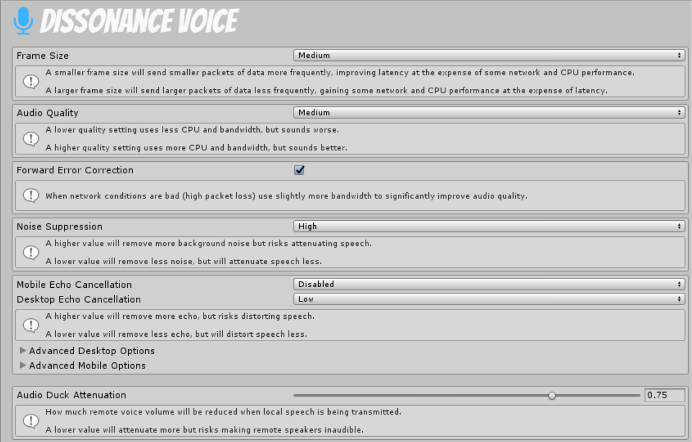

Voice Settings
Voice settings is a central place to control various audio settings Dissonance uses. Voice settings can be accessed through Window > Dissonance > Quality Settings.

Persistence
These settings are serialized into an asset file at Assets/Plugins/Dissonance/Resources/VoiceSettings.asset and are also saved into PlayerPrefs. PlayerPrefs override the values saved in the asset.
Because the settings are saved into an asset the values you choose will be built into your game and will be the default values used by all players.
Because settings are saved into PlayerPrefs you can expose the settings to end users in your UI and the values will be saved on a per user basis.
Frame Size
- Tiny (10ms) LAN ONLY
- Small (20ms)
- Medium (40ms)
- Large (60ms)
This setting determines how much voice data is sent in a single network packet. There is some overhead associated with each individual packet - using larger values will send less packets-per-second and thus reduce CPU load and network usage. However, larger packets introduce more latency (more delay between speaking and hearing). Latency is a very important aspect of perceived voice quality and lowering this will improve the flow of conversations.
The Tiny option (10ms packets) is the lowest latency option. However due to the very high rate of packets (100/second) it is not suitable for use over the internet, only use it in a local area network when latency is very important (e.g. shared space VR).
Audio Quality
- Low (~10KB/s)
- Medium (~17KB/s)
- High (~24KB/s)
This setting determines the bitrate the encoder will target - higher values result in higher audio quality but slightly more CPU load and network usage.
Forward Error Correction
Forward error correction includes extra information in audio packets when network conditions are bad. When a packet is lost due to bad network conditions the audio decoder can use this extra information in other packets to reconstruct a lower quality version of the lost audio. This can almost completely conceal small amounts of packet loss at the cost of ~10% more data used when bad network conditions are detected.
Noise Suppression
This setting determines how much noise suppression will be applied to the microphone signal before transmission. Noise in this sense is any sound which is not speech such as computer fans or microphone hiss. Noise suppression will not remove echoes other other voices playing through your speakers.
Noise suppression is not perfect and may sometimes distort speech, higher levels will remove more background noise but also risk more distortion of speech. However, the risk is fairly low - the distortion is quite minor and the noise suppressor is adaptive so it will only apply really high noise suppression when there is a lot of background noise.
Acoustic Echo Cancellation
These settings control the acoustic echo canceller, this observes sounds coming out of the speakers and then attempts to remove these sounds from the microphone signal after a short delay. It automatically calibrates the delay so expect a short period (10-40 seconds) where no echoes will be cancelled, if there is no sounds coming out of the speakers at all (or the microphone is not detecting those sounds) it will not be able to calibrate the delay. Refer to these docs for a tutorial on correctly setting up the acoustic echo canceller.
Mobile Echo Cancellation
This controls how much the echo canceller tries to cancel echo on mobile devices.
Desktop Echo Cancellation
This controls how much the echo canceller tries to cancel echo on desktop PCs.
Audio Duck Attenuation
This controls how much remote voices will be attenuated by (reduced in volume) when the local speaker is transmitting.